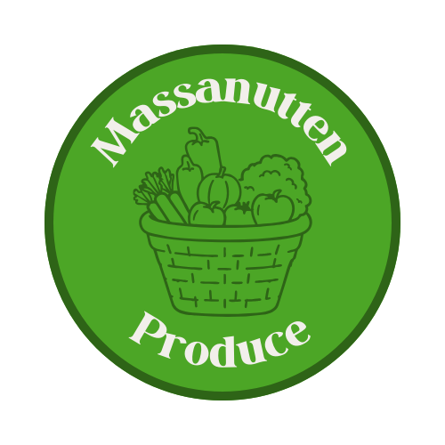
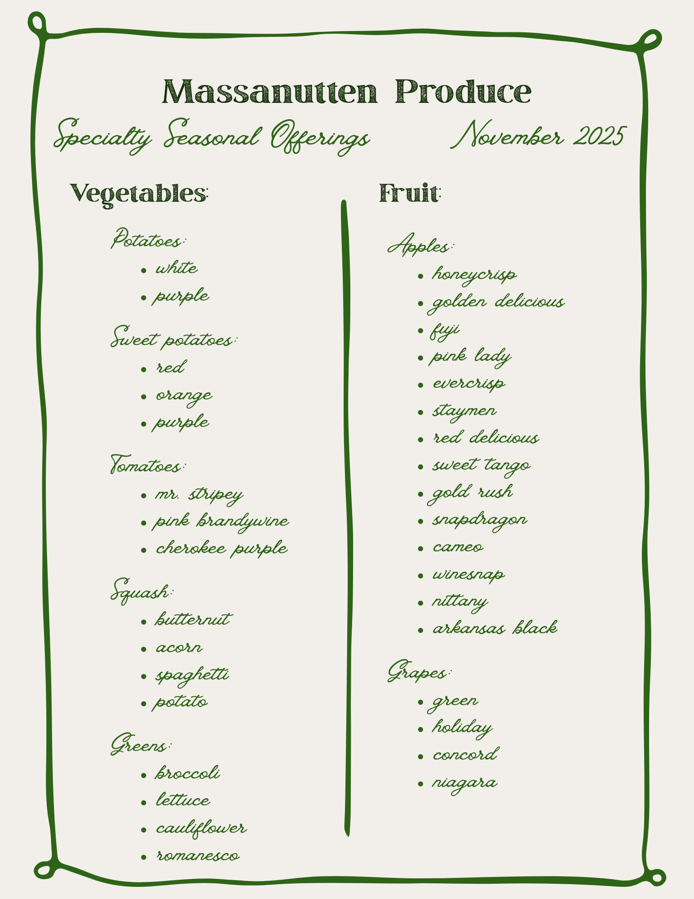
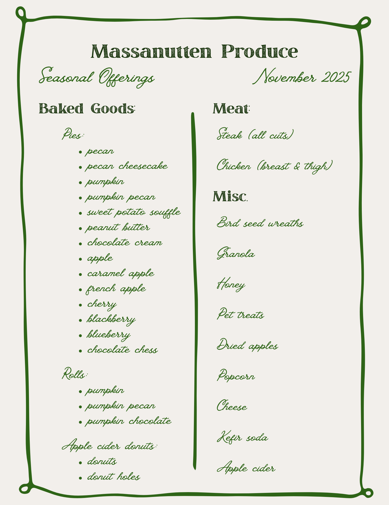

Brand Development for Massanutten Produce
Project Overview
I designed a cohesive set of brand and digital assets for Massanutten Produce to strengthen their online presence and improve customer engagement. The project included a responsive website, logo design, and a seasonal menu board, all aligned within a unified visual identity.
Brand Redesign

Massanutten Produce Branding by Carbo2cs
Produce Flyer
The logo and produce flyer use consistent colors, fonts, and imagery to create a trustworthy, approachable feel. Together, these assets demonstrate my ability to apply user-centered design, branding, and front-end development to a real-world client project.


Massanutten Produce Website Open Website
Using UX/UI principles, I designed the website to be intuitive and easy to navigate, expanding the business’s reach beyond social media. Research into similar organizations informed content structure and user flow, while consistent typography and an earthy color palette reinforced brand recognition. The site was built using GitHub, VS Code, and Bootstrap.